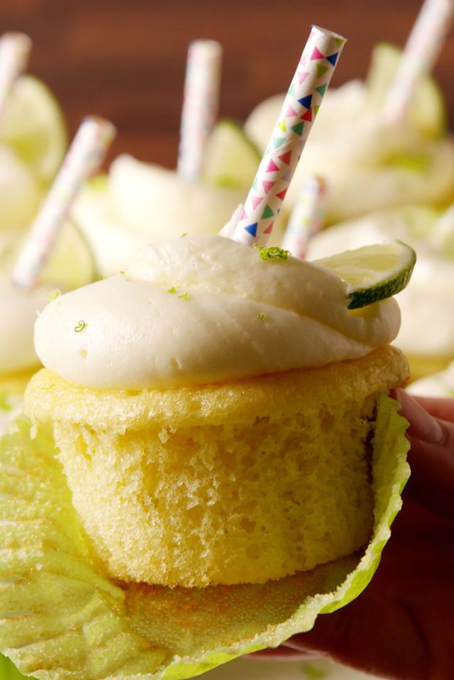

Margarita Cupcakes

DIRECTIONS
-
MAKE CUPCAKES
- Preheat oven to 350° and line two muffin tins with 18 cupcake liners. In a large bowl using a hand mixer, beat butter and sugar until light and fluffy.
- Add eggs, one at a time, beating well after each addition. Add lime juice and zest and vanilla and mix until combined.
- In another large bowl, whisk together flour, cornstarch, baking powder, and salt.
- Add half the dry ingredients to the wet ingredients, beating until just combined.
- Pour in milk and mix until fully incorporated. Add remaining dry ingredients and stir until just combined.
- Fill cupcake liners 3/4 full with batter.
- Bake until slightly golden and a toothpick inserted into center of each cupcake comes out clean, about 25 minutes.
- Let cupcakes cool in pans 5 to 10 minutes, then transfer to a wire rack to cool completely.
- MAKE FROSTING
- In a large bowl using a hand mixer, beat butter, half of powdered sugar, lime juice, and tequila until light and fluffy.
- Add remaining powdered sugar and beat until smooth.
- Pipe frosting onto cooled cupcakes. Garnish with coarse salt, lime zest, and lime wedges and a cut decorative straw before serving.
Pumpkin Custard
DIRECTIONS
- Preheat oven to 325°. Place six 4” ramekins into a 9”-x-13” baking dish.
- Bring a tea kettle or pot of water to boil. In a large mixing bowl, whisk eggs and yolks with maple syrup until smooth.
- In a small pot, heat milk, cream, orange zest, bourbon, salt, pumpkin pie spice, nutmeg, and cinnamon until simmering, about 4 minutes; strain to remove orange zest.
- Whisking constantly, stream cream mixture into egg mixture until evenly combined. Whisk in pumpkin and vanilla until smooth.
- Divide mixture evenly among ramekins. Transfer baking dish to the oven, then carefully pour in boiling water around ramekins to reach 1" depth.
- Bake until custard is mostly set but still quivers uniformly when ramekin is jiggled, about 45 minutes. (If using smaller ramekins, check after 35 minutes.)
- Carefully remove baking dish from oven, being very careful to not let water splash into the ramekins. Let cool for 10 minutes, then remove ramekins from water bath.
- To serve warm, topped with whipped cream. Optionally, let cool to room temperature and refrigerate until set, about 2 hours.
- To brûlée, dust each chilled ramekin evenly with 1 teaspoon sugar. Use a kitchen torch to gradually melt and caramelize sugar. Serve with whipped cream, if desired.